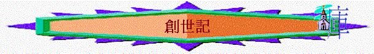

[ Home ] [ 經卷課程 ] [ 查經資料 ] [ 栽培課程 ] [ 事奉培訓 ] [ 聚會資源 ] [ 佈道資源 ] [ 胸懷普世 ] [ 異端異教 ] [ 信息分享 ] [ 專題研究 ] [ 祈禱專題 ] [ 詩歌簡譜 ] [ 動畫之廊 ] [ 輔導關懷 ] [ 站長聯絡 ]
用主日學直接教授形式, 講解創世記
創世記--緒論 創1-2 創3-5 創6:1-11:9 創11:10-13:4 創13:5-18:15 創18:16-25:18 創25:19-26:35 創27-31 創32-36 創37-41 創42-50
word 版